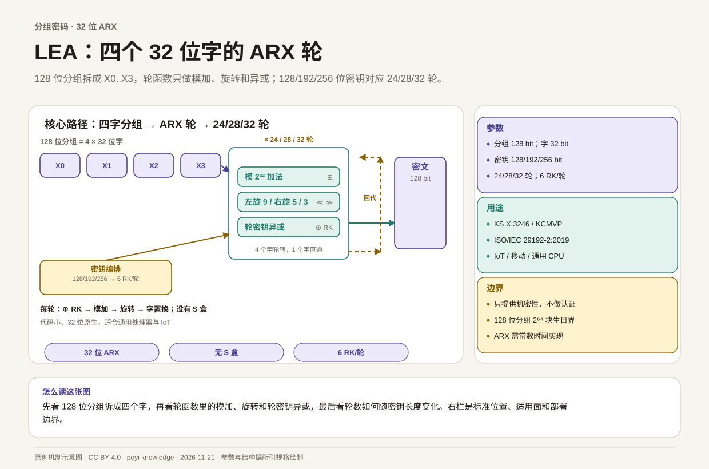
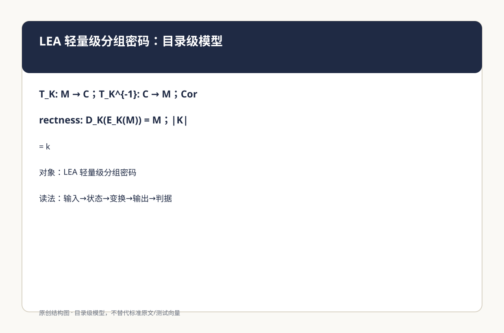

原理与机制
算法：LEA 轻量级分组密码（LEA）。### 128 位分组与 32 位 ARX
LEA 的分组固定 128 位，拆成四个 32 位字 X0..X3。轮函数只做三类运算：模 2^32 加法、按位循环移位和异或。三个子变换分别用左旋 9、右旋 5、右旋 3，把两个字与轮密钥混合后再写回，第四个字直接搬到下一轮；没有 S 盒，也没有查找表。### 轮数与密钥编排
LEA-128/192/256 分别跑 24/28/32 轮，每轮需要 6 个 32 位轮密钥。密钥编排把主密钥扩成 6×(轮数) 个 32 位字，轮常数由黄金比例常数派生；解密用同一套轮密钥逆序执行。128 位分组意味着生日界是 2^64，单密钥下的多块数据要控制加密量。

为什么重要
LEA 的设计目标是“软件轻量”：32 位 ARX 指令在 Intel、AMD、ARM 和 ColdFire 上都是一条或几条原生指令，代码体小、寄存器压力低、没有表查 cache 泄漏。论文的实验显示它在这些平台上快于 AES，适合手机、嵌入式网关和云端批量加密。### 硬件与侧信道
ARX 没有 S 盒，硬件面积小，但也意味着差分/线性分析直接作用在加法与旋转上；实现方通常加掩码或隐藏来抗侧信道。LEA 的轻量定位是“代码小、速度快”，不是“自带侧信道防护”。
应用与实例
LEA 是韩国 KS X 3246 标准，也是韩国 KCMVP 密码模块验证的批准算法；2019 年进入 ISO/IEC 29192-2，与 PRESENT、CLEFIA 同列轻量分组密码。它出现在移动设备、IoT 固件和需要小代码体的加密库里。### 生态
LEA 有 Crypto++、Bouncy Castle 等实现，也有硬件 IP；但它的协议采用面远不如 AES，跨组织互通通常仍以 AES 为默认。选 LEA 往往是因为韩国合规、代码尺寸或特定 CPU 的吞吐，而不是全球生态。

边界与攻击面
公开文献对全 24/28/32 轮 LEA 没有实用密钥恢复；缩减轮的差分、线性与不可能差分分析仍在推进，说明轮函数的安全边际需要按轮数评估。LEA 只提供分组密码，不提供认证；CBC、CTR、GCM 等模式要单独选，nonce/IV 规则也要单独保证。128 位分组在大量数据下会碰到 2^64 块的生日界，CTR 模式还要限制同一密钥的块数。ARX 实现的时序可能依赖数据，软件实现要做常数时间检查；硬件实现要评估故障注入与功耗分析。
历史与背景
LEA 由韩国 ETRI 的 Hong、Lee、Kim、Kwon、Ryu、Lee 在 2013 年 WISA 提出，论文标题是 “LEA: A 128-Bit Block Cipher for Fast Encryption on Common Processors”。它在 2019 年进入 ISO/IEC 29192-2:2019，成为国际轻量密码标准的一部分。### 命名
LEA 是 “Lightweight Encryption Algorithm” 的缩写，不是某款产品的型号；它与 AES 的差别不在分组长度，而在轮函数：AES 用 S 盒与列混合，LEA 用 32 位 ARX。
技术参数与复算边界
该条目的形式模型是 (C=E_K(P;r),\qquad P=D_K(C))。输入：输入：LEA 轻量级分组密码的公开参数、密钥/随机数与消息；变量说明：P 明文，C 密文，K 密钥，r 随机化参数。 预期输出：按 LEA 轻量级分组密码 的规范执行后得到可验证的输出或可比较的优势界。 复算必须给出输入、步骤、输出和单位；示例只演示流程，不替代标准测试向量。
复杂度由密钥长度、分组/状态规模、轮数、随机数质量和敌手模型共同决定；参数越界、版本差异与实现侧信道都可能使公式结论失效。已登记限制：该条目只给出形式模型与可复算步骤，不声称已完成生产实现、侧信道认证或第三方安全评估。
参数与状态规模
公式 (C=E_K(P;r),\qquad P=D_K(C)) 的输入、输出和单位必须逐项登记；复算顺序为：1. 按算法规范编码输入 2. 在密钥控制下执行轮函数 3. 输出密文并检查长度与格式。
状态规模、密钥长度、分组长度和轮数决定复杂度；这些量不能从标题推断，必须以标准或实现文档为准。
逐步示例与核验
形式模型与复算步骤
[C=E_K(P;r),\qquad P=D_K(C)]
LEA 轻量级分组密码的公开参数、密钥/随机数与消息；变量说明：P 明文，C 密文，K 密钥，r 随机化参数。1.按算法规范编码输入。2.在密钥控制下执行轮函数。3.输出密文并检查长度与格式。边界：公式只覆盖已登记的参数与假设；参数取值、标准版本和实现细节仍以来源为准。
参考出处
- Wikipedia search entry for LEA 轻量级分组密码. https://zh.wikipedia.org/w/index.php?search=LEA%20%E8%BD%BB%E9%87%8F%E7%BA%A7%E5%88%86%E7%BB%84%E5%AF%86%E7%A0%81
- Handbook of Applied Cryptography (Menezes, van Oorschot, Vanstone). https://www.cacr.math.uwaterloo.ca/hac/